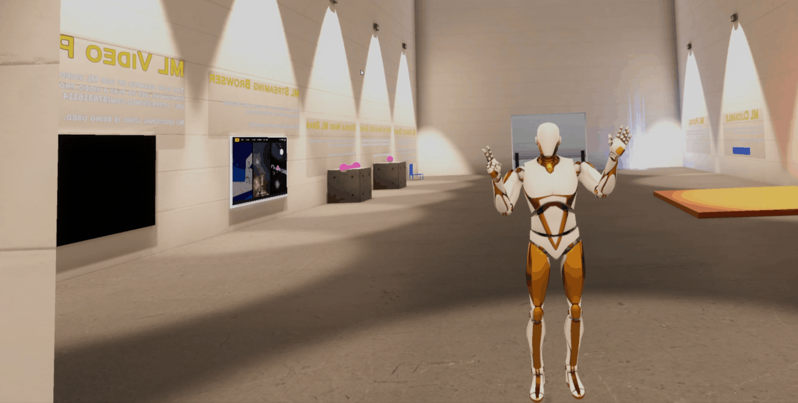

Focus
Operator-facing UI
The project explores how buttons, layout, and visual states can make in-world interfaces easier to interpret under active use.
VR Interface Project
UI Interactions is a virtual reality interface project focused on making menus, controls, and system feedback feel readable and responsive inside immersive space. The work centers on operator clarity, interaction state changes, and interface behavior that helps users understand intent and results quickly while acting in VR, including interaction patterns that pair UI feedback with inverse kinematics-driven motion.
Focus
The project explores how buttons, layout, and visual states can make in-world interfaces easier to interpret under active use.
Outcome
Users get more reliable confirmation from UI actions, which improves usability and reduces hesitation inside the headset.
Project Media

